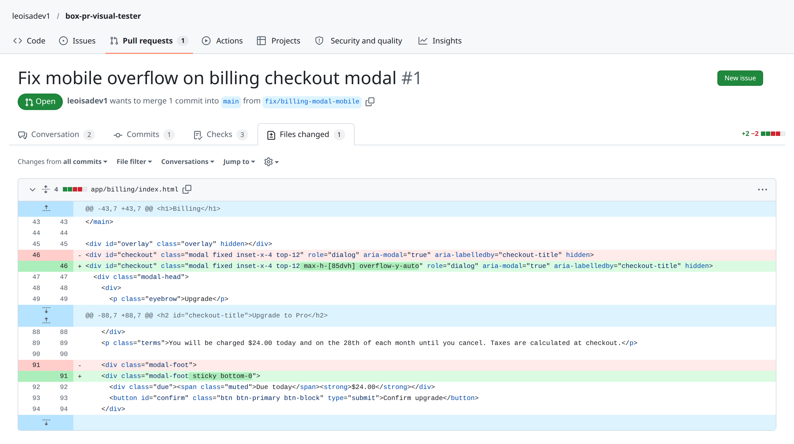
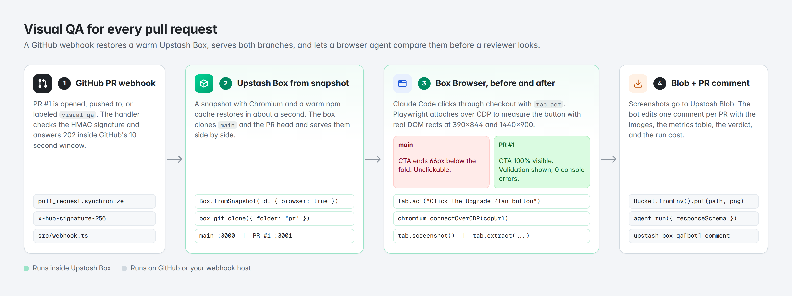
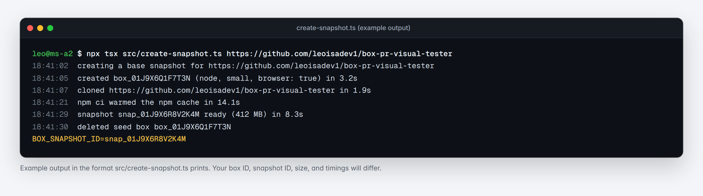
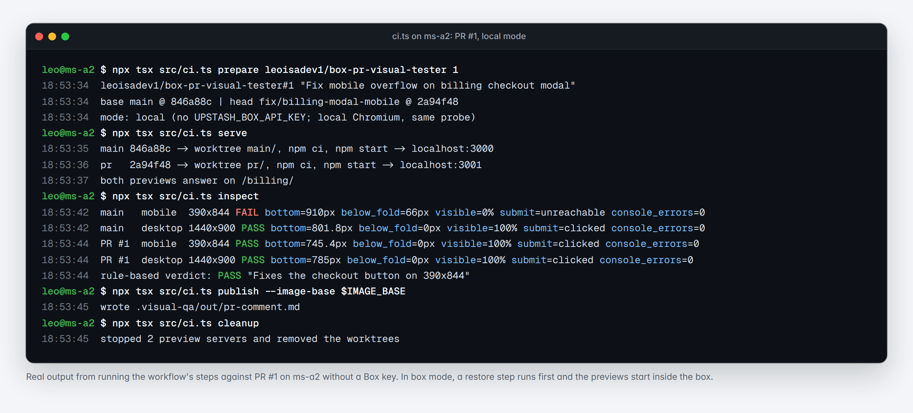
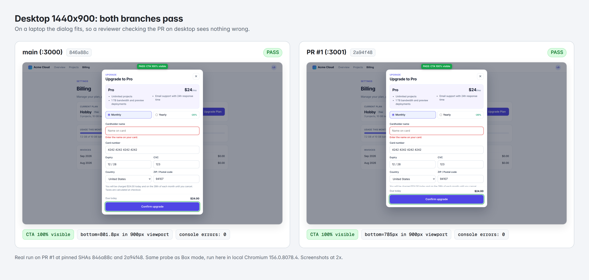
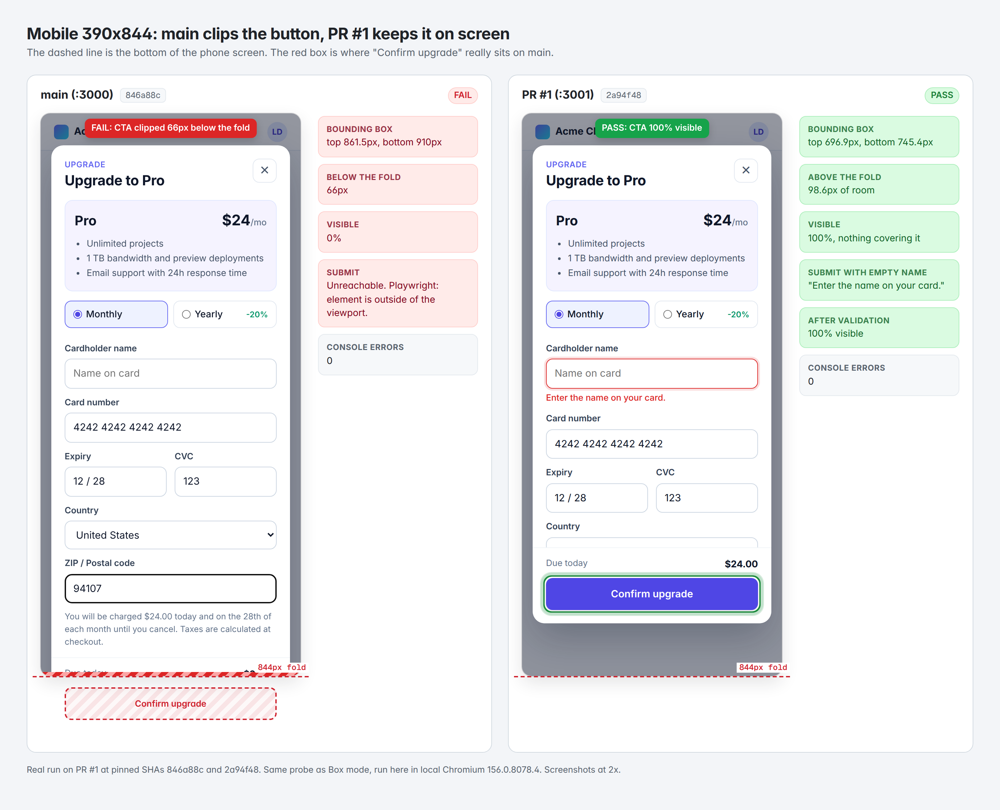
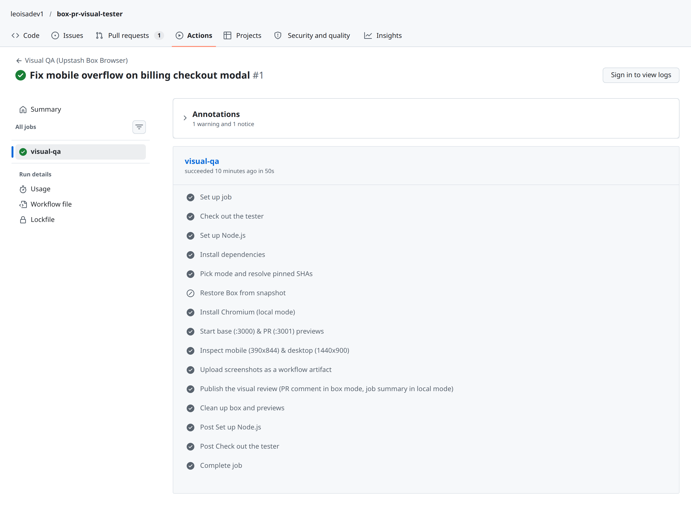
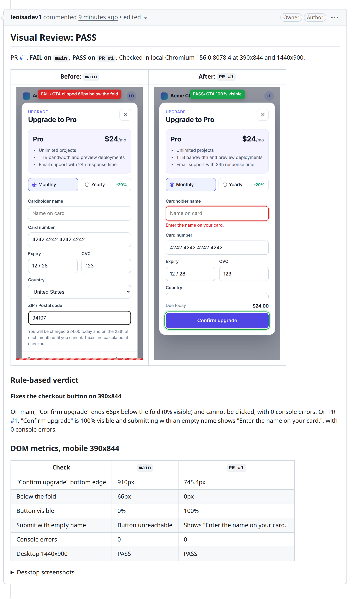

Unit tests don't see the screen. A pull request can pass every check and still ship a checkout dialog whose "Confirm upgrade" button sits below the fold on a phone, where nobody can tap it.
In this post we'll build an agent that catches that class of bug on every PR. When a pull request opens, it restores an Upstash Box from a snapshot, serves the base branch and the PR side by side, lets Claude Code click through the flow in the box's built-in browser, measures the result with Playwright, and posts one review comment with before and after screenshots.
The code is open source at leoisadev1/box-pr-visual-tester, and PR #1 in that repo shows the whole thing on a real pull request.
The 28-second video walks through box mode end to end. The box ID, restore time, CPU time, and cost in it are example values; the pixel measurements are the real ones from PR #1.
The bug a diff can't show
Here is PR #1. It changes two lines in app/billing/index.html:

A reviewer reading this diff has to imagine the layout. Does max-h-[85dvh] overflow-y-auto fix the dialog on a 390x844 phone? Does sticky bottom-0 keep the button on screen, or does it hide something else? The diff can't answer that. A browser can, in about a second, if something opens the page and looks.
On main, the Upgrade to Pro dialog is positioned with fixed inset-x-4 top-12 and has no height limit. On a phone its content runs past the bottom of the screen, and body scroll is locked while it's open, so the user can't reach the button. The PR caps the dialog at 85% of the dynamic viewport height, lets it scroll, and pins the footer with the button to its bottom edge.
What visual PR testing needs, and what Box gives you
| What the check needs | Why | What Upstash Box gives you |
|---|---|---|
| Both versions of the app running at once | You compare the PR against the base, not against a screenshot from last week | One box, two clones, two ports: box.git.clone and box.exec.command |
| A real browser next to the app | The previews stay on localhost, with no tunnel or public URL |
browser: true and box.browser.tab.create("http://localhost:3000/...") |
| Navigation that survives refactors | A renamed CSS class shouldn't break the test | tab.act("Click the Upgrade Plan button") and tab.extract(...) |
| Exact numbers | "Looks fine" is a judgment; "bottom edge at 910px in an 844px viewport" is a fact | box.browser.cdpUrl() for Playwright over CDP |
| A fast start on every push | Installing a browser and node_modules per PR is slow |
Box.fromSnapshot with Chromium and a warm npm cache |
| A readable verdict | Reviewers want one sentence, not a JSON dump | box.agent.run({ responseSchema }) with Claude Code |
| Screenshots GitHub can show | PR comments need public image URLs | @upstash/blob bucket.put |
| Isolation | PR code is untrusted and shouldn't run next to your secrets | Each run gets its own box, deleted when the run ends |
How it works

- GitHub tells us about the PR, through a webhook (
src/webhook.ts) or a workflow (.github/workflows/visual-qa.yml). - We restore a box from a snapshot, clone the base and the PR at the exact SHAs from the event, and serve them on
:3000and:3001. - Claude Code opens checkout in both with
tab.act. Playwright, attached to the same Chromium over CDP, measures the button at 390x844 and 1440x900. - Claude Code writes the verdict from those numbers, the screenshots go to Upstash Blob, and the bot posts or updates one comment on the PR.
The repo is small. Each stage lives in src/box-stages.ts, so the one-process runner, the webhook, and the GitHub Actions steps all share the same code.
src/
create-snapshot.ts one-time: Node box + Chromium + warm npm cache
box-stages.ts restore, serve both branches, inspect, verdict, upload
probe.ts Playwright: fold, clipping, hit target, validation
report.ts Zod verdict schema, fallback verdict, PR comment Markdown
github.ts SHA-pinned PR refs, comment upsert
pr-visual-tester.ts one-process runner
ci.ts the same stages as separate CI steps
webhook.ts HMAC-verified webhook, one run per PR at a time
app/billing/ the demo app with the bugWhat you need
- An Upstash Box API key in
UPSTASH_BOX_API_KEY - A GitHub token in
GITHUB_TOKENthat can read the repo and comment on pull requests - Optionally, an Upstash Blob token in
UPSTASH_BLOB_TOKENfor a public bucket, so the screenshots show inline in the comment - Optionally, your own Anthropic key in
ANTHROPIC_API_KEY. Without it, the box uses the Upstash-managed key.
bashgit clone https://github.com/leoisadev1/box-pr-visual-tester
cd box-pr-visual-tester
npm install
Step 1: make a base snapshot once
Every PR run starts from a snapshot instead of a cold box. The seed box gets Chromium (browser: true), a shallow clone of the repo, and a warm npm cache, so later installs in a fresh checkout mostly hit the cache.
ts// src/box-stages.ts
export async function createBaseSnapshot({ env, repoUrl, log }: { env: Env; repoUrl: string; log: Log }): Promise<string> {
const seed = await Box.create({
runtime: "node",
size: "small",
browser: true,
agent: agentConfig(env), // Claude Code with ClaudeCode.Sonnet_4_5
git: { token: env.GITHUB_TOKEN },
});
try {
await seed.git.clone({ repo: repoUrl, folder: "seed", depth: 1 });
await seed.cd("seed");
await mustSucceed(seed.exec.command("npm ci --no-audit --no-fund"));
const snapshot = await seed.snapshot({ name: "pr-visual-base" });
return snapshot.id;
} finally {
await seed.delete();
}
}
Run it once per repo and keep the ID:
bashnpx tsx src/create-snapshot.ts https://github.com/leoisadev1/box-pr-visual-tester

That screenshot shows the format the script prints. Your box ID, snapshot ID, size, and timings will differ. Re-run it when your lockfile changes a lot; a stale cache only makes npm ci slower, not wrong.
Step 2: serve both branches at pinned SHAs
For each PR, restore the snapshot, then clone the base into main/ and the PR head into pr/. Branches move: if someone pushes while the box is starting, a clone of the branch name tests the newer commit and files the result under the older one. So after cloning, check out the exact SHA from the event and verify it.
ts// src/box-stages.ts
for (const branch of BRANCHES) { // main -> :3000, pr -> :3001
const isHead = branch.key === "after";
const sha = isHead ? pr.headSha : pr.baseSha;
await box.git.clone({
repo: isHead ? pr.headCloneUrl : pr.baseCloneUrl, // forks have their own clone URL
branch: isHead ? pr.headRef : pr.baseRef,
folder: branch.folder,
depth: 1,
});
await box.cd(branch.folder);
await mustSucceed(
box.exec.command(`git fetch --depth 1 origin ${sha} && git checkout --detach ${sha} && test "$(git rev-parse HEAD)" = ${sha}`),
);
await mustSucceed(box.exec.command("npm ci --prefer-offline --no-audit --no-fund"));
await mustSucceed(box.exec.command(`PORT=${branch.port} nohup ${env.PREVIEW_START} > /tmp/${branch.folder}.log 2>&1 &`));
await box.cd("..");
}
pr.baseSha and pr.headSha are a branded CommitSha type, validated as 40 hex characters where the webhook payload comes in, so a branch name can't be passed where a SHA belongs.
The browser runs inside the same box, so it reaches both previews on localhost. Here is the step runner doing the same thing against PR #1 on a dev machine:

That run is real, and it ran in local mode because the demo repo has no Box key configured. In box mode, ci.ts restore runs first and serve starts the previews inside the box instead of in local worktrees. The probe lines are the same either way.
Step 3: let the agent click, and let Playwright measure
This is the core idea. Two tools share one Chromium:
- Box Browser tabs do the navigation.
tab.act("Click the Upgrade Plan button")resolves a plain-English instruction to an element and clicks it. - Playwright over CDP does the measuring.
box.browser.cdpUrl()returns an authenticated WebSocket URL, andchromium.connectOverCDPattaches to the same tabs.
ts// src/box-stages.ts
const browser = await chromium.connectOverCDP(await box.browser.cdpUrl());
const tab = await box.browser.tab.create(url, { waitUntil: "networkidle" });
const page = findPage(browser, url); // the Playwright handle for the same tab
// Natural-language click first; a plain role click if the browser model is down or misses.
const openCheckout = async () => {
try {
const result = await tab.act("Click the Upgrade Plan button");
if (result.success) return;
} catch {}
await page.getByRole("button", { name: "Upgrade Plan" }).click();
};
const cdp = await emulate(page, { name: "mobile", width: 390, height: 844 }); // DPR 2 through CDP
try {
const report = await inspectCheckout({ page, viewport, openCheckout });
await annotate(page, report);
const png = await tab.screenshot();
} finally {
await cdp.detach(); // only now: detaching drops the emulation
}
Keep that CDP session open until the screenshot is taken. Chromium drops the device override when the session detaches, and the probe reloads the page. We checked this against a CDP-attached Chromium: with an early detach(), the "mobile" run measured a 1280x720 page at 1x.
inspectCheckout in src/probe.ts reloads the page, opens checkout, fills the card fields, leaves the cardholder name empty, and submits. It records:
- Where the button is.
getBoundingClientRect()on the submit button. - How much of it a user can see. The rect intersected with the viewport and with every ancestor that clips overflow, up to the fixed dialog.
- Whether something covers it.
document.elementFromPointat the visible center. - What happened on submit. The validation message, or Playwright's own error when the button can't be clicked. After a successful click it measures the button again, because a validation message can push it out of view.
- Console errors and page errors for the whole run.
Here is the visibility check, cut down to the vertical axis:
tsconst visiblePercent = await page.$eval("#checkout button[type=submit]", (button) => {
const r = button.getBoundingClientRect();
let top = Math.max(r.top, 0);
let bottom = Math.min(r.bottom, window.innerHeight);
// Walk up to the fixed dialog; <body> overflow belongs to the viewport.
for (let el = button.parentElement; el && el !== document.body; el = el.parentElement) {
const style = getComputedStyle(el);
if (style.overflowY !== "visible") {
const clip = el.getBoundingClientRect();
top = Math.max(top, clip.top);
bottom = Math.min(bottom, clip.bottom);
}
if (style.position === "fixed") break;
}
return Math.round((Math.max(0, bottom - top) / r.height) * 1000) / 10;
});
Stop at the fixed dialog, not at <body>. The body has overflow: hidden while scroll is locked, so a naive walk counts it as a clipping box and reports a perfectly visible button as 0% visible. Our first version did exactly that.
At 1440x900 both branches pass. The dialog fits on a laptop, which is exactly why this bug survives review:

At 390x844 they don't. On main, "Confirm upgrade" starts at 861.5px and ends at 910px, 66px below the 844px fold, and Playwright refuses to click it. On PR #1 it ends at 745.4px with 98.6px to spare, and submitting with an empty name shows "Enter the name on your card.":

Finally, tab.extract() asks the browser model to read the final state back as typed data. It's a cross-check that the page says what the DOM probe thinks it says, so a failed extract returns null instead of failing the run:
tsconst AgentRead = z.object({
primaryButtonLabel: z.string(),
validationMessage: z.string().nullable(),
});
const agentRead = await tab
.extract("Read the checkout dialog. Return the primary button's label and the validation message under the cardholder name, or null if there is none.", AgentRead)
.catch(() => null);
Step 4: ask Claude Code for the verdict
The measurements go to the Claude Code agent configured on the box. responseSchema makes run.result a typed object instead of free text:
ts// src/report.ts
export const VerdictSchema = z.object({
status: z.enum(["pass", "fail"]),
headline: z.string().describe("One sentence, under 90 characters."),
summary: z.string().describe("Two or three sentences a reviewer can act on."),
regressions: z.array(z.string()).describe("Problems the PR introduces. Empty when there are none."),
});
// src/box-stages.ts
const run = await box.agent.run({
prompt: buildVerdictPrompt({ prNumber: pr.number, title: pr.title, before, after, agentRead }),
responseSchema: VerdictSchema,
timeout: 120_000,
});
const verdict = run.result; // { status, headline, summary, regressions }
The prompt tells the agent to quote pixel numbers from the metrics and not invent its own. Every model step has a fallback, so a model outage never blocks the comment: if tab.act fails, the probe clicks by accessible name; if tab.extract fails, the cross-check is skipped; if the verdict call fails, ruleBasedVerdict() writes a verdict from the measurements alone and the comment says so.
Step 5: upload screenshots and comment on the PR
Screenshots go to Upstash Blob under a path keyed by the head SHA, so every push gets its own immutable images:
tsconst bucket = new Bucket({ token });
const blob = await bucket.put(`visual-qa/${pr.repo}/pr-${pr.number}/${pr.headSha}/before-mobile.png`, png, {
contentType: "image/png",
cache: "immutable",
});
if (!blob.url) throw new Error("The Blob bucket is private. GitHub needs public image URLs; make the bucket public.");
On a private bucket, blob.url is undefined, and signed read URLs expire after at most 10 minutes. That's too short for a PR comment, so the code fails loudly instead.
The comment starts with a hidden marker, <!-- upstash-box-visual-review -->. On the next push, upsertComment() pages through the PR's comments, finds the one with that marker written by the bot's own login (GITHUB_BOT_LOGIN), and edits it. Checking the author matters: anyone can paste the marker into their own comment.
Step 6: run it on every PR
You have two options, and both call the same stages.
A webhook server. src/webhook.ts verifies GitHub's x-hub-signature-256 HMAC in constant time and answers 202 right away, since GitHub gives you 10 seconds. It runs one check per PR at a time. If two pushes land close together, it remembers only the newest head SHA and tells the older run not to publish, so stale results never overwrite newer ones:
ts// src/webhook.ts
function enqueue(pr: PullRequestRef): "started" | "queued" {
const key = prKey(pr); // "owner/repo#number"
latest.set(key, pr);
if (running.has(key)) return "queued";
running.add(key);
void drain(key);
return "started";
}
async function drain(key: string): Promise<void> {
try {
let pr = latest.get(key);
while (pr) {
const sha = pr.headSha;
await visualTestPullRequest({ env, pr, shouldPublish: () => latest.get(key)?.headSha === sha }).catch(
(err: unknown) => console.error(err),
);
const next = latest.get(key);
if (next?.headSha === sha) {
latest.delete(key);
pr = undefined;
} else {
pr = next;
}
}
} finally {
running.delete(key);
}
}
With signed test payloads it returns 401 for a bad signature, 204 for events it ignores, 400 for a malformed payload, and started then queued for two quick pushes.
GitHub Actions. If you'd rather not host anything, .github/workflows/visual-qa.yml runs the same stages as workflow steps through src/ci.ts, which keeps the box alive between steps and finds it again with Box.get:
yamlon:
pull_request:
types: [opened, synchronize, reopened, labeled]
concurrency:
group: visual-qa-${{ github.event.pull_request.number }}
cancel-in-progress: true
jobs:
visual-qa:
runs-on: ubuntu-24.04
env:
UPSTASH_BOX_API_KEY: ${{ secrets.UPSTASH_BOX_API_KEY }}
BOX_SNAPSHOT_ID: ${{ secrets.BOX_SNAPSHOT_ID }}
UPSTASH_BLOB_TOKEN: ${{ secrets.UPSTASH_BLOB_TOKEN }}
GITHUB_TOKEN: ${{ secrets.GITHUB_TOKEN }}
steps:
- uses: actions/checkout@v7
with:
ref: ${{ github.event.pull_request.base.sha }} # run the tester from the base, not the PR
- uses: actions/setup-node@v7
with: { node-version: 22, cache: npm }
- run: npm ci --no-audit --no-fund
- name: Pick mode and resolve pinned SHAs
id: prepare
run: npx tsx src/ci.ts prepare
- name: Restore Box from snapshot
if: steps.prepare.outputs.mode == 'box'
run: npx tsx src/ci.ts restore
- name: Install Chromium (local mode)
if: steps.prepare.outputs.mode == 'local'
run: npx playwright-core install --with-deps chromium
- name: Start base (:3000) & PR (:3001) previews
run: npx tsx src/ci.ts serve
- name: Inspect mobile (390x844) & desktop (1440x900)
run: npx tsx src/ci.ts inspect
- uses: actions/upload-artifact@v7
with: { name: "visual-qa-pr-${{ github.event.pull_request.number }}", path: .visual-qa/out/ }
- name: Publish the visual review (PR comment in box mode, job summary in local mode)
run: npx tsx src/ci.ts publish
- name: Clean up box and previews
if: always()
run: npx tsx src/ci.ts cleanup
The workflow checks out the tester from the base SHA, so a PR can't change the code that judges it. ci.ts prepare picks the mode: box when UPSTASH_BOX_API_KEY and BOX_SNAPSHOT_ID are set, otherwise local, which runs the same probe in Chromium on the runner. GitHub doesn't pass secrets to workflows triggered from forks, so local mode keeps those PRs covered too.
Adding the visual-qa label re-runs the check on demand. Here is the real run on PR #1:

"Restore Box from snapshot" is skipped because the demo repo has no Box secrets yet, so the run used local mode. Add the two secrets and the same workflow restores a box instead.
What the review looks like on a real PR

The comment on PR #1 comes from the local-mode run in Step 2, so it says "local Chromium", carries a rule-based verdict, and has no cost line. A box-mode run says "Upstash Box box_...", uses Claude Code's verdict, and adds the cost line. The numbers it reports:
| Mobile 390x844 | main |
PR #1 |
|---|---|---|
| "Confirm upgrade" bottom edge | 910px | 745.4px |
| Below the fold | 66px | 0px |
| Button visible | 0% | 100% |
| Submit with empty name | Button unreachable | Shows "Enter the name on your card." |
| Console errors | 0 | 0 |
| Desktop 1440x900 | PASS | PASS |
What it costs
This flow spends most of its time waiting on npm, the network, and the browser, not computing. The cost line is built from what the SDK reports per run:
Run.cost.totalUsdis set on agent runs, so it covers the verdict call. Command runs report0.Run.cost.computeMsis wall-clock time for each command. The code adds it up and prices it atBOX_CPU_HOUR_USD(default0.10; set it to your plan's rate).tab.actandtab.extractare metered separately and don't show up inRun.cost.tab.actreturnsinputTokensandoutputTokens, which the runner logs. Check the Upstash console for the full bill.
The line looks like this. The numbers here are an example, not a measurement:
Total run cost: $0.0038 | 5.4s active CPU @ $0.10/CPU-hrAt $0.10 per CPU-hour, 5.4 seconds of compute is about $0.00015, so in that example nearly all of the total is the verdict agent's tokens.
Run it yourself
bash# One-time
export UPSTASH_BOX_API_KEY=... GITHUB_TOKEN=...
npx tsx src/create-snapshot.ts https://github.com/<owner>/<repo>
export BOX_SNAPSHOT_ID=snap_...
# One PR, results saved locally
npx tsx src/pr-visual-tester.ts run <owner>/<repo> <pr-number> --out ./visual-qa
# One PR, screenshots to Upstash Blob and a comment on the PR
export UPSTASH_BLOB_TOKEN=...
npx tsx src/pr-visual-tester.ts run <owner>/<repo> <pr-number>
# Every PR, from a webhook
GITHUB_WEBHOOK_SECRET=... npm run webhook
For GitHub Actions, copy .github/workflows/visual-qa.yml and add UPSTASH_BOX_API_KEY, BOX_SNAPSHOT_ID, and UPSTASH_BLOB_TOKEN as repository secrets.
FAQ
Why not compare screenshots pixel by pixel? Pixel diffs tell you that something changed, not whether it's broken. A one-pixel font change fails them; a button that moved 66px off screen on one viewport may not, if your baseline was taken on desktop. Measuring the thing you care about, like "is the primary button fully visible and clickable", gives a pass or fail a reviewer can trust.
Why use the model at all, if Playwright does the measuring?
For the parts that need judgment. tab.act finds "the Upgrade Plan button" without a selector, so the check survives refactors. The verdict turns four reports into a sentence a reviewer can act on. Both have deterministic fallbacks, so the model makes the check friendlier without making it flaky.
Do I need Box Browser for this to work?
No, and that's on purpose. Without a Box key, ci.ts runs the same probe in local Chromium, which is how PR #1 in the demo repo was checked. With a key, everything moves into an isolated box: PR code never runs on your CI runner, the browser sits next to the app, and the snapshot makes startup fast.
Why pin SHAs instead of checking out the branch? Because the branch can move between the webhook firing and the box cloning it. Without pinning, the comment for commit A can describe commit B.
How do I check more than one page?
Turn inspectCheckout into a list of probes, one per critical path such as sign-up, checkout, and settings, and run each against both branches. box.browser.recordings.start() can also capture the whole session as video when a reviewer wants to see how the agent got somewhere.
Can a visual regression block the merge?
Yes. Make the workflow job required in your branch protection rules, and have ci.ts publish exit non-zero when verdict.status is fail.
Wrapping up
The split of work is what makes this reliable. The model handles the parts that need judgment: finding the button and explaining the result. Playwright handles the parts that need precision. Upstash Box gives both of them the same browser, right next to both versions of your app, and throws it all away when the run ends.
The full source is at leoisadev1/box-pr-visual-tester, and you can see the review on a real pull request in PR #1.